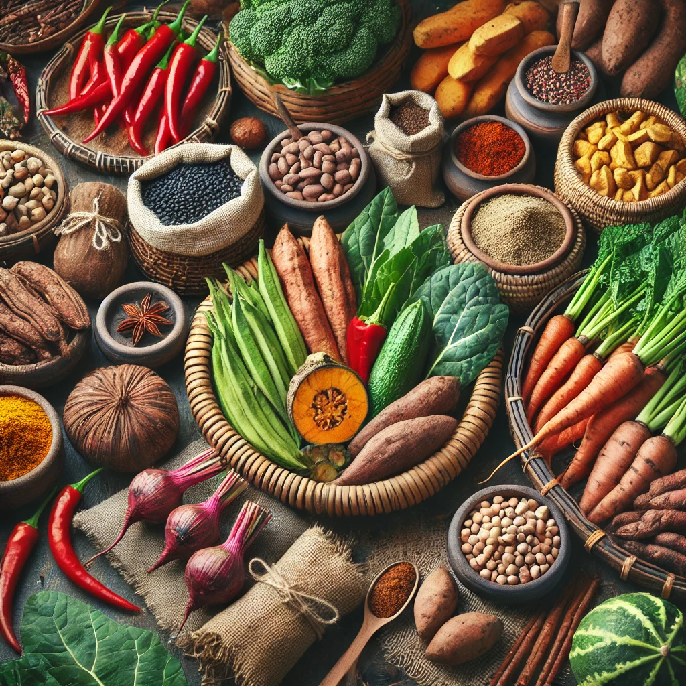
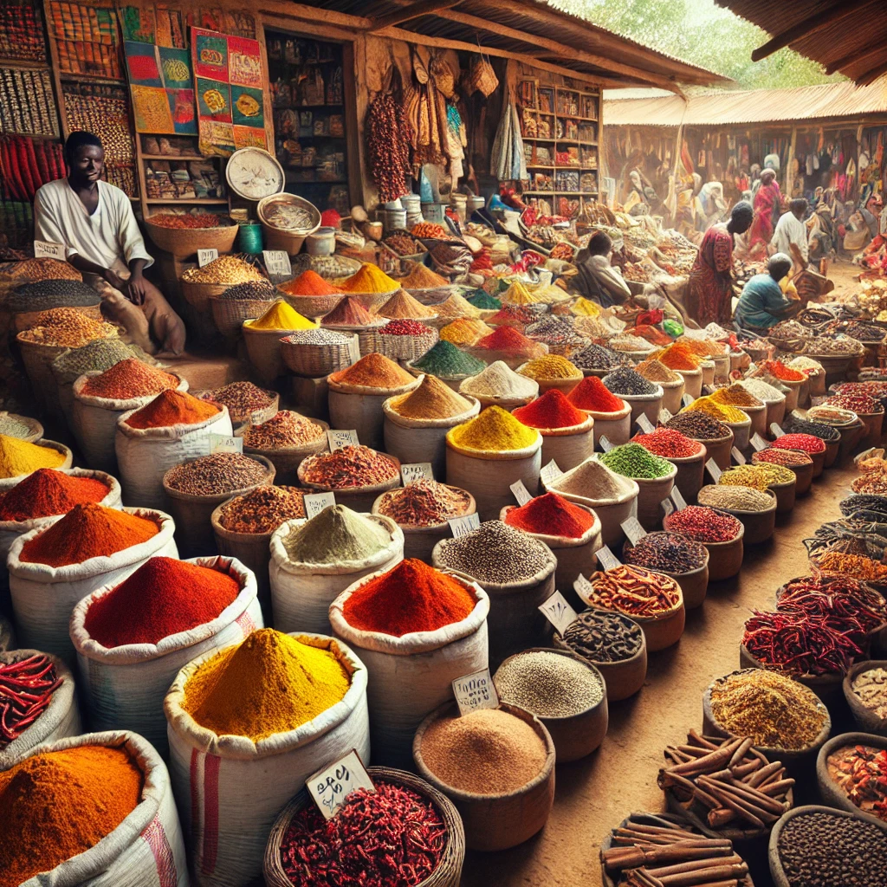

About Our Recipe Management Application
Welcome to our Recipe Management Application! This platform is designed to help you organize and manage your favorite recipes with ease. Whether you're a home cook or a professional chef, our application allows you to add, edit, and delete recipes, view detailed recipe information, and download recipes as PDFs.
Our mission is to make cooking fun and accessible by providing a user-friendly interface where you can store your culinary creations. We hope you enjoy using the application as much as we enjoyed creating it!

African Spices and Ingredient
Dancing and feasting is part of our culture!

A typical Nigerian Market displaying varieties of ingredient
Cooking Brings Us Together!